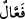
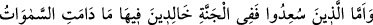
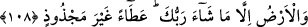

yaptığı gibi de bazılarını ateşten çıkarmak husûsunda hiç kimsenin herhangi bir itirazı
olmaksızın “istediğini hakkıyla yapandır.”
Âyette bir mübâlağa sıyğası olan “
” lâfzının kullanılması, Allah Teâlâ’nın
dilediği ve yaptığı şeyler çok fazla olduğu içindir.
Ebu’s-Suûd Efendi der ki: “Rabbinin dilediği hariç” ifadesi, ebedî kalmaktan
istisnadır. Bu istisna şu âyetlerdeki istisnâya benzer: “İlk tattıkları ölüm dışında
orada artık ölüm tatmazlar.” (ed-Duhân, 44/56); “Geçmişte olanlar bir yana
babalarınızın evlendiği kadınlarla evlenmeyin.” (en-Nisâ, 4/22), “Deve iğne
deliğine girinceye kadar” (el-A’râf, 7/40) Yalnız şu kadar var ki bu âyetlerde
bahsedilen durumların muhâl olduğu aklın hükmü ile bilinirken, ilâhî meşîet gereği
cehennemde ebedî kalmayacakları naklin hükmü ile bilinmektedir. Şöyle ki:
Şakîler, Allah’ın ateşte kalmamalarını dilediği süre dışında dâimâ orada
kalacaklardır. Kâfirlerin cehennemde ebedî kalacakları konusundaki naslara göre
Allah’ın onları cehennemden çıkarmak istemesi ve orada kalmalarının son bulması
mümkün değildir. Bir de ilâhî dileğin böyle bir şeye taallukunun Allah açısından bir
gereklilik olduğu şeklindeki muhtemel tevehhümü bertaraf etmek için şöyle buyruluyor:
“Çünkü Rabb’in istediğini hakkıyla yapandır.” Yani Allah Teâlâ, -aksinin vukûu
imkânsız olarak- bu şakîleri ateşte ebedî bırakırken kendi irâdesi gereği
davranmaktadır. Verdiği karşılıkların kulların fiillerine göre terettüp etmesini gerektiren
hikmet kanunlarına göre cereyan eden meşîeti mûcibince hükmetmektedir.
Ancak sen şöyle de diyebilirsin: “Şakîler, cismânî azapta sürekli kalmayacaklar.
Aksine Allah’tan başka hiç kimsenin bilmediği bazı rûhânî elem ve cezâlara
çarptırılacaklardır. Bu cezâlara, ateşte bulunurlarken çarptırılacaklarsa da bu cezâların
şiddetinden dolayı ateşin azâbını unutacaklar, ateşi hissetmeyeceklerdir. Nitekim
kendisini aşırı gam saran, büyük sıkıntılar karşısında dehşete düşen kimse karınca,
böcek ve benzerlerinin ısırmasını hissetmez. Sevinçli kimsenin durumunu da buna kıyas
et. Zâten bu da az sonra gelecek.
108. Mutlu kılınanlar ise cennettedirler. Rabb’inin dilediği hariç, gökler ve yer
durdukça onlar da orada ebedî kalacaklardır. Bu, bitmez tükenmez bir lütuftur.
“Mutlu kılınanlar” kendileri için saâdet takdir olunan ve bunun için yaratılan kişiler
“ise cennettedirler. Rabb’inin dilediği hariç, gökler ve yer durdukça onlar da orada
ebedî kalacaklardır.”
Katâde: “Allah bununla neyi istisnâ ettiğini daha iyi bilir.” der. Dahhâk ise:
“Cennete sokulmadan önce cehennemde kaldıkları süre hariç.” diye açıklar ve belli bir
başlangıçtan itibaren başlayan ebedîliğin, müddetin sona ermesi açısından eksik